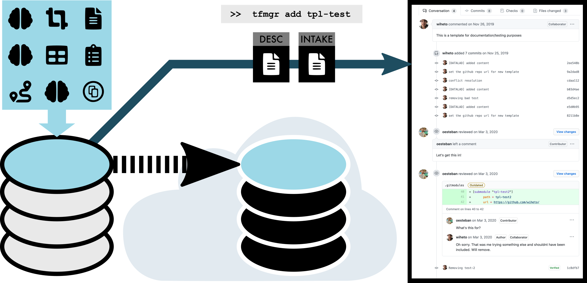
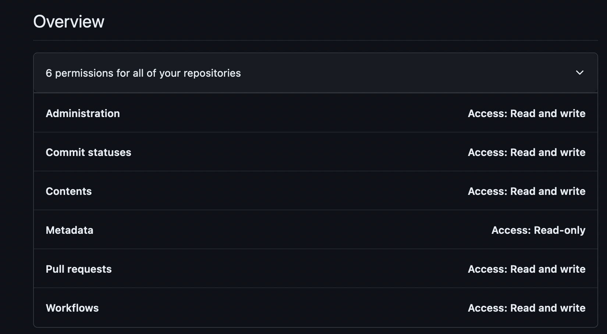

Submitting a new template
Who is this tutorial for?
First, this is intended for those wishing to add templates to TemplateFlow. Second, this is for people who want to add a template directory that does not already exists. TemplateFlow consists of multiple templates sorted by the space the template is in. This tutorial tells you how to add a new template space.
If you want to fix, improve or extend an existing template please refer to the Updating templates documentation (work in progress).
This tutorial assumes you have read and understood the contributing guidelines.
Overview: Submission pipeline and the TemplateFlow Manager tool¶
 |
|---|
To contribute a new template to TemplateFlow, members of the community first organise template resources to conform to the BIDS-like TemplateFlow structure. Next, the TemplateFlow Manager tool (tfmgr) synchronises the resources to OSF cloud storage and opens a new pull request proposing the addition of the new template. A subsequent peer-review process ensures that all data are conformant with the TemplateFlow standard. Finally, TemplateFlow curators conclude the peer-review process with the merge of the pull request, thereby adding the template into the TemplateFlow Archive. |
Step 1: Organize your template tree¶
TemplateFlow follows a BIDS-like structure, please make sure your tree is formatted following the naming conventions.
Examples
Please check the formatting of existing templates in the Archive browser
Step 2: Install the TemplateFlow Manager¶
Installing the manager is as easy as:
pip install git+https://github.com/templateflow/python-manager@master
Once the manager is installed, you should be able to print out its version:
$ tfmgr --version
TF Archive manager 20.0.0
Step 3: Prepare your credentials for authentication¶
On OSF.io: First, generate a personal authentication token (PAT) to authenticate your username and be able to upload data to OSF. Good guidelines on how to create your PAT on OSF are given here.
On GitHub: Then, you also want to generate a PAT to authenticate against GitHub. If you are unsure of how to properly create one, please follow the official guidelines, in particular, it is likely easier to avoid permissions problems if you take the classic tokens route. The permissions summary before finally creating the PAT should look as follows:
 |
|---|
| For the TemplateFlow Manager to work, the PAT must have associated a number of permissions. |
Make sure you store both tokens safely and that you will be able to retrieve them later
At this point, you can set up your credentials
$ export OSF_TOKEN='<copy and paste your OSF PAT here>'
$ export GITHUB_USER='<your GitHub handle>' # For instance, 'oesteban'
$ export GITHUB_TOKEN='<copy and paste your GitHub PAT here>'
Step 4: Add your template with tfmgr add¶
# Assuming the template is at the current directory, under tpl-Name/
$ tfmgr add tpl-Name'
Finished: The peer-review process is now initiated¶
Once tfmgr add has concluded successfully, you'll be provided with a URL that points to a newly created PR against the templateflow superdataset.
That means your PR will now be listed at the templateflow/templateflow repo.
Now, the TemplateFlow maintainers will carry out editorial management of your proposed template and have it peer-reviewed before it is finally merged into TemplateFlow.